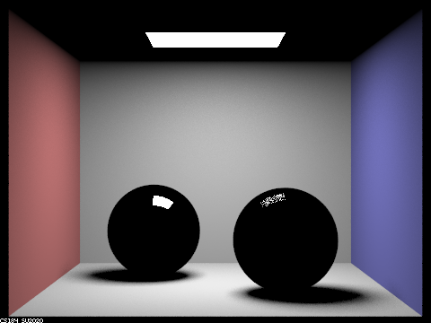
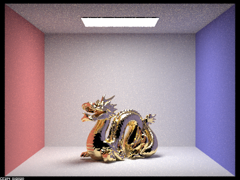

In this project, I continued working on ray tracing in Project 3-1.
In Part 1, I implemented more complex BSDF materials such as mirror and glass
with specific reflection and refraction rules.
In Part 4, I simulated a thin lens to enable the depth of field effect.
After I finished this part, I could focus on certain parts of the image
by setting specific lens radius and focal distance.
Part 1: Mirror and Glass Materials
First, I implemented the BSDF::reflect() function.
Since I am using the origin as the intersection point and using the z axis as the normal vector,
I could just assign wi to be (-wo.x, -wo.y, wo.z).
Second, I implemented MirrorBSDF::sample_f() using my BSDF::reflect() function.
Because it is a delta BSDF, I set pdf equal to 1.
Also, because ideal mirror reflection only change the direction of the ray without any Lambertian falloff,
I need to cancel out the cosine from the at_least_one_bounce_radiance function
and return reflectance / abs_cos_theta(*wi).
Third, I implemented BSDF::refract() for the glass refraction.
I determined eta and the sign(+-) of wi.z based on the sign(+-) of wo.z.
Then I calculated 1.0 - eta * eta * (1.0 - cos_theta(wo) * cos_theta(wo)) and reture false if it is negative,
which means that refraction does not happen due to total internal reflection.
Otherwise, I set the coordinates of wi as following and normalize it:
wi->x = -eta * wo.x;
wi->y = -eta * wo.y;
wi->z = sign * sqrt(wiz2);
Finally, I return true.
After that, I filled in the RefractionBSDF::sample_f() with BSDF::refract.
I set pdf to 1 as in MirrorBSDF::sample_f() and assign eta with correct value as in BSDF::refract().
If refract(wo, wi, ior) returns false, then I just return an empty vector.
Otherwise, I return transmittance / abs_cos_theta(*wi) / eta / eta,
cancelling out the Lambertian cosine like in the mirror BSDF.
Fourth, I implemented GlassBSDF::sample_f()
with Schlick's approximation to decide the ratio of the reflection energy to the refraction energy.
If refract(wo, wi, ior) returns false (i.e., total internal reflection),
assign the reflection of wo to *wi, set the *pdf to 1, and return reflectance / abs_cos_theta(*wi).
Else, compute Schlick's reflection coefficient R and flip a coin based on R.
If coin_flip(R) returns true,
assign the reflection of wo to *wi, set the *pdf to R, and return R * reflectance / abs_cos_theta(*wi).
Otherwise, assign the refraction of wo to *wi, set the *pdf to 1-R,
and return (1-R) * transmittance / abs_cos_theta(*wi) / eta^2.
Show a sequence of six images of scene CBspheres.dae rendered with max_ray_depth set to 0, 1, 2, 3, 4, 5, and 100.
|
|

|
|
|
|
|
|
|
|
|
Part 4: Depth of Field
The differences between a pinhole camera model and a thin-lens camera model:
In a pin-hole camera, everything is in focus.
In a thin-lens camera with finite apertures, objects are in focus only if they're within the focal plane.
Setting lens radius of a thin-lens camera to zero will reduce to a pinhole camera.
With a thin lens, pFilm receives radiance from any point on the thin lens, not just from (0, 0, 0).
So we need to uniformly sample the lens.
To simulate a thin lens, I first figured out the red ray's direction
and uniformly sample the disk representing the thin lens
with rndR and rndTheta to get pLens and pFocus.
pLens is the origin of the blue ray.
Then I calculated the direction of the blue ray as pFocus - pLens and normalized it.
After that, I converted the origin and the direction of the blue ray from camera to world space
and add pos to the blue ray's origin.
Finally, I set the near and far clips to be the min_t and max_t of the blue ray and return the blue ray.
Show a "focus stack" where you focus at 4 visibly different depths through a scene.
Aperture Size = 0.2
CBdragon.dae
|
|
|
|
|
|
Show a sequence of 4 pictures with visibly different aperture sizes,
all focused at the same point in a scene.
Focal Distance = 4.75
CBdragon.dae
|

|
|
|
|
|
Part 2 and 3 (Not for Grading)
I also implemented Part 2: Microfacet Material and Part 3: Environment Light.
Here are my rendering results!
|
|
|
|
|

|